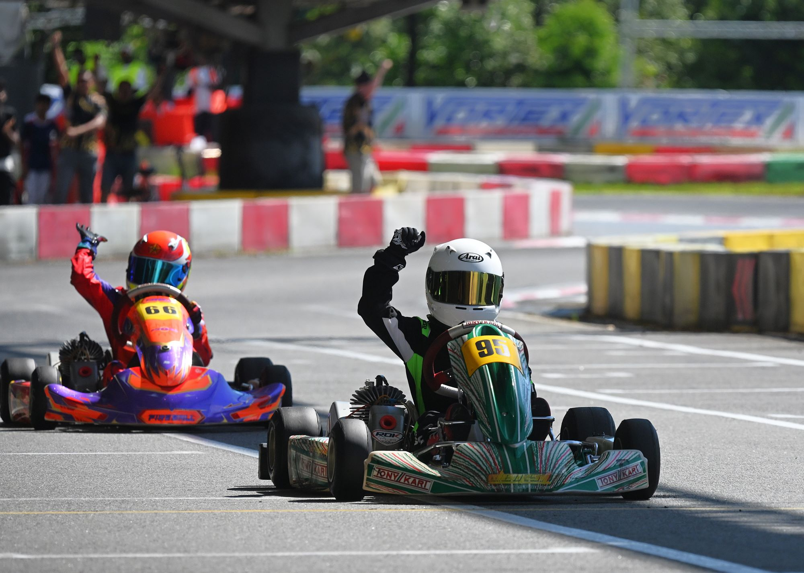
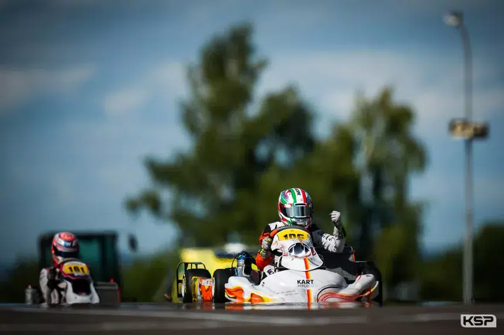
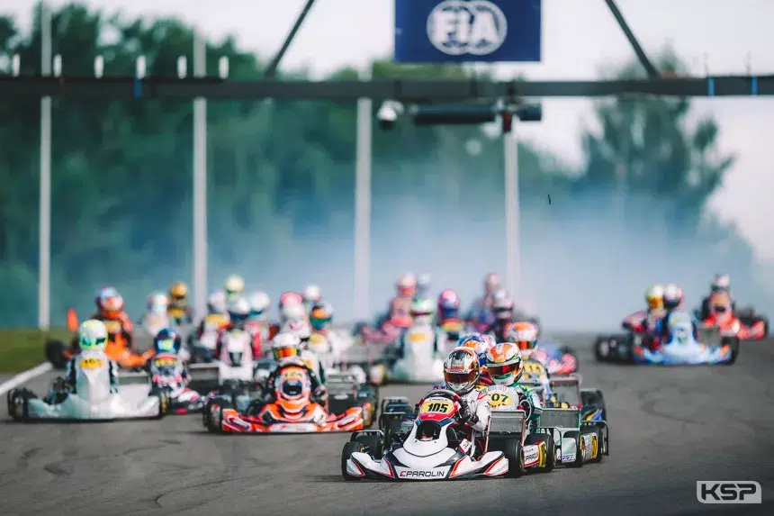

Stay updated with the latest Go Karting Club news, activities and events.

The third round of ROK Cup Singapore was held at the counter-clockwise layout of KF1 last weekend. Victories were grabbed by Riley Jackson (Cadet), Aaron Aqil (Cadet U10), Danish Chen (Junior), Lewis Xie (Senior), Peter Chua (Expert/Expert PLUS), and Wang Jiahao (Rookie).

Pole position for Daniel Miron Lorente (Fusion Motorsport), numerous victories in the Qualifying Heats, no fewer than nine fastest laps in the races, victory in the Super Heat for Priam Bruno (VictoryLane), 3rd place for Zack Zhu (VictoryLane) and, ultimately, the top three places in the European Championship. The KR-IAME entries proved to be particularly competitive in Sweden. Will Green (KR Motorsport), who set the second-fastest lap in the Final, was crowned 2026 FIA Karting European Champion ahead of Miron Lorente and Many Nuvolini (KR Motorsport). The Final was far from being the most exciting of the season from a sporting perspective, but it also saw Mason Robertson (KR Motorsport) finish 5th and Ava Jean Lawrence (DPK Racing) climb to 7th after gaining 14 places. Even before the World Championship, KR Motorsport has also secured another title in the FIA Karting Team Championship.

William Calleja (Parolin/TM) started from pole next to Noah Baglin (KR/IAME), with the possibility of Baglin securing the European title in this race, depending on how Zac Drummond (KR/IAME) performs after starting 22nd. The rain that started in the Junior race didn’t come to anything. Calleja held the lead while Baglin dropped to 3rd behind Ilie Crisan (Tony/Vortex). Drummond had gained nine places already. Calleja quickly pulled away by almost a second while Baglin and Crisan fought to 2nd and Marco Garst (KR/IAME) was swamped by Giacomo Giusto (Parolin/TM) and Emil Hernandez (KR/IAME). Drummond was by now up to 8th, then took 7th from Garst. Benjamin Manach (Parolin/TM) overtook him but led them both past Aston Sharp (Birelart/IAME). Calleja was now over three seconds ahead of Baglin, with Baglin knowing that he would be champion if the positions stayed as they were. Calleja took the win by 2.311s from Baglin with Crisan 3rd. Giusto took 4th ahead of Hernandez and Manach with Drummond remaining 7th after gaining 15 places.